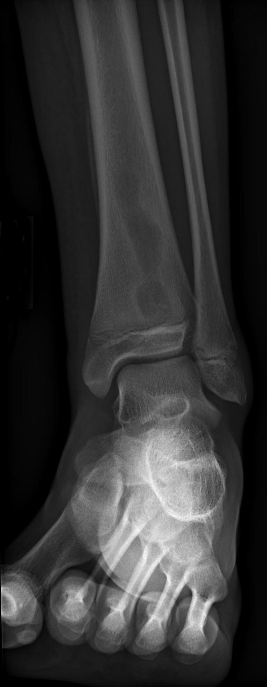

Ficha del catálogo
Osteomielitis
- Sistema
- Óseo
- Modalidad
- RM
- Región
- Hueso largo y pie
- Dificultad
- Avanzado
Infección del hueso y de la médula ósea que llega por vía hematógena en niños o por contigüidad desde una úlcera en adultos diabéticos. En el niño afecta preferentemente la metáfisis de huesos largos por su circulación lenta, mientras que en el pie diabético asienta bajo zonas de apoyo y prominencias óseas. El retraso diagnóstico lleva a la cronificación y a la formación de secuestros.
Técnica
Resonancia magnética con secuencias sensibles al líquido, T1 sin contraste y estudio con gadolinio si se buscan colecciones. La radiografía simple sigue siendo el punto de partida.
Qué observar
- Sustitución de la señal grasa medular normal en las secuencias T1
- Edema medular extenso con hiperseñal en las secuencias sensibles al líquido
- Destrucción cortical y trayectos fistulosos hacia la piel
- Colecciones subperiósticas o abscesos de partes blandas con realce periférico
- Secuestro: Fragmento óseo necrótico rodeado de tejido de granulación
- Reacción perióstica y en fases crónicas involucro que envuelve el hueso
Hallazgos
Alteración de la señal medular con pérdida del patrón graso, edema, realce tras contraste y afectación de partes blandas adyacentes con o sin colecciones.
Perlas
La radiografía simple tarda entre diez días y dos semanas en mostrar lisis, porque se necesita perder alrededor de un tercio de la matriz mineral para que un cambio sea visible. Un estudio normal en la primera semana no descarta nada.
Diagnóstico diferencial
- Artropatía de Charcot
- Afecta al mediopié con luxación y fragmentación sin trayecto fistuloso.
- Sarcoma de Ewing
- Masa de partes blandas voluminosa con reacción perióstica laminada.
- Infarto óseo
- Borde serpiginoso con doble línea y sin realce difuso.
Simuladores
- Edema óseo reactivo por sobrecarga
- Contusión ósea postraumática
- Tumor óseo primario agresivo
Por modalidad
- RX
- Detecta lisis, secuestros y reacción perióstica en fases avanzadas
- TC
- Excelente para secuestros y gas intraóseo
- RM
- Método más sensible y específico, define la extensión quirúrgica
Protocolo
Resonancia con T1, secuencia con supresión grasa sensible al líquido y series con contraste en los tres planos, centrada en la zona clínica sospechosa.
Clasificación
Se agrupa en aguda, subaguda y crónica. Una forma subaguda característica es el absceso de Brodie, cavidad lítica metafisaria con borde esclerótico.
Errores frecuentes
- Descartar infección por radiografía normal en la fase inicial
- Confundir la neuroartropatía del pie diabético con osteomielitis
- No valorar la afectación de partes blandas ni buscar el trayecto fistuloso

osteomielitis infeccion osea pie diabetico secuestro absceso brodie edema medular